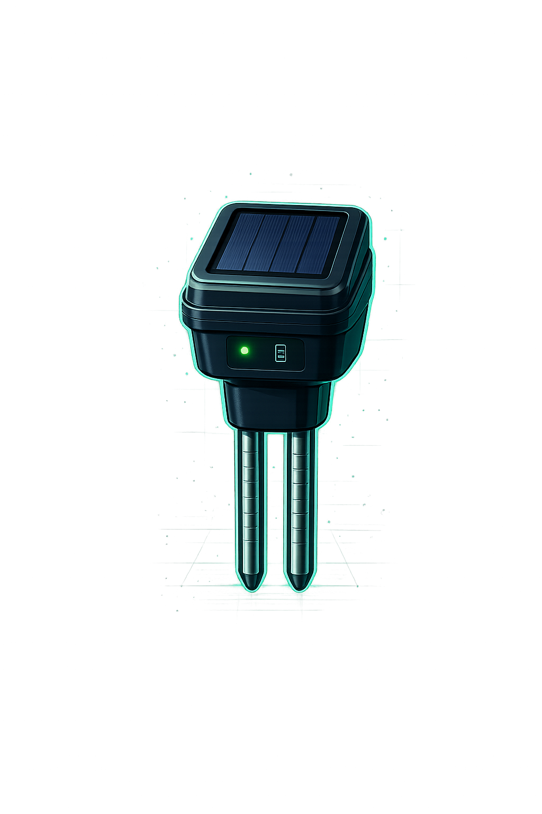

Inteligência Artificial transformando
o manejo agrícola.
Monitoramento inteligente do solo em tempo real.
Dados complexos traduzidos em decisões simples para o produtor rural.
Este no momento é apenas um protótipo, mas a revolução já começou.

O SoloVitAI não apenas coleta dados — ele os interpreta. Transforma linguagem técnica em ações práticas e acessíveis para qualquer produtor rural.
Transforma dados técnicos do solo em linguagem simples e ações práticas para o produtor.
Auxilia a tomada de decisão agrícola com recomendações baseadas em IA e dados reais.
Integra sensores via Bluetooth e centraliza todas as informações em um único painel.
Interface projetada para todos — da gestão moderna ao produtor sem familiaridade digital.
Central de monitoramento agrícola inteligente. Dados recebidos via Bluetooth, organizados automaticamente, analisados por IA.
O SoloVitAI traduz manuais técnicos da Embrapa em linguagem simples, ícones intuitivos e tutoriais visuais — para que qualquer produtor possa operar com confiança.
Dados técnicos transformados em frases do dia a dia. Sem jargões, sem complicações.
Cada parâmetro representado visualmente. Mesmo sem ler, o produtor entende.
Passo a passo ilustrado para cada ação — direto no aplicativo.
O chatbot responde dúvidas em linguagem natural e orienta o produtor.
Qualquer produtor consegue operar o sistema. Nossas etapas são guiadas por ícones e imagens — intuitivas, inclusivas, simples.
Aproxime o sensor do solo. A conexão é automática via Bluetooth.
As informações vão direto para o app em segundos, sem precisar digitar nada.
O sistema interpreta os dados automaticamente com inteligência artificial.
Receba a recomendação em linguagem simples e aja com confiança.
Consulte dados em tempo real, verifique condições, peça recomendações. Seu assistente agrícola inteligente, disponível 24h.
Identificação do problema: produtores sem acesso a tecnologias acessíveis de análise de solo.
Pesquisa com produtores rurais, parceria com agrônomos e definição da arquitetura do sistema.
Primeira versão do app com integração Bluetooth e leitura básica dos sensores de solo.
Testes em lavouras reais com produtores voluntários. Refinamento da interface de acessibilidade.
Implementação do módulo de inteligência artificial e do assistente SoloBot.
Lançamento nacional, parceria com cooperativas agrícolas e expansão para novos cultivos.